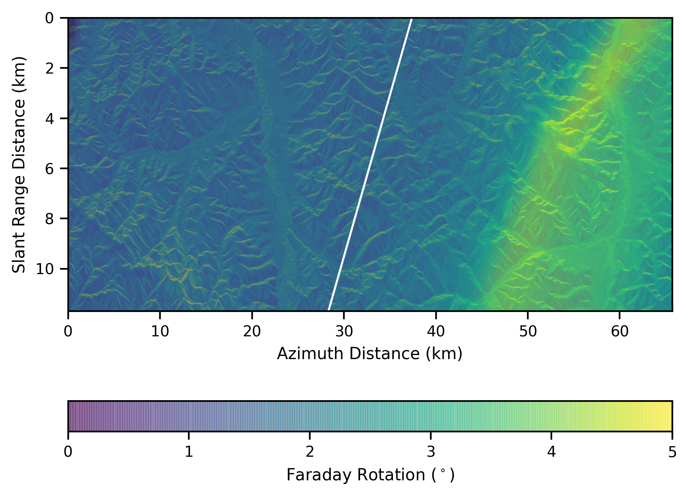

Faraday Rotation map superimposed on total power image, VV polarization. The white line indicates the projected magnetic field. SAR image collected by ALOS PALSAR from JAXA
Low-frequency space-based SAR systems can be used for global surveillance. This mission is dedicated to the precise observation of local changes due to global climate change. In particular, they can measure the evolution of terrestrial biomass in equatorial regions, and the decrease of ice fields in high latitude regions. However, it is well known that, at these lower frequencies (L-band or below), the radar signal is affected by propagation through the ionospheric layer. The ionospheric background induces refraction, polarization rotation, group delay and phase advance mainly due to the large-scale variations of the electron content within the ionosphere. Also, the small-scale ionospheric structures generated by plasma instability processes affect the radar signal by adding a scattering phenomenon during the measurement, this is the ionospheric scintillation. These signal fluctuations reduce the quality of a SAR image, which may even prevent InSAR processing and change detection. Essentially, these disturbances occur in two regions, namely the polar cap and equatorial zones. More precisely, in the polar cap, ionospheric activity is more intense in the auroral oval. This location is an energy zone with a high electron density. For equatorial regions, the radar signal is frequently disturbed during the post-sunset periods because of electric fields resulting from the interaction of charged particles from the Sun, the geomagnetic field and the particle winds developed within the ionosphere.
Recently, I worked on a methodology to detect and characterize the ionospheric activity thanks to spaceborne synthetic aperture radar measurements. This strategy is based on the Faraday rotation estimation which leads to the Total Electron Content (TEC) quantification, and the ionospheric phase advance assessment.
The publication is available here and the video presenting my work here.